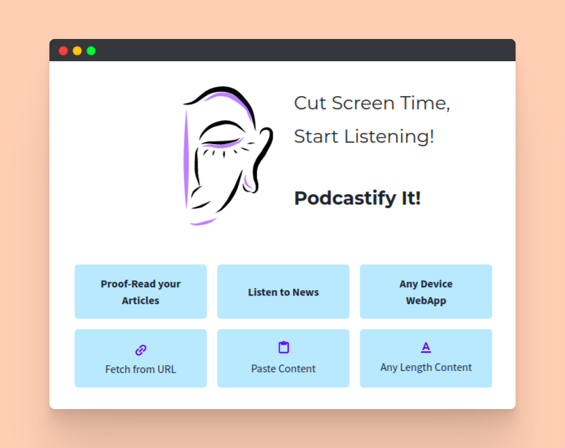
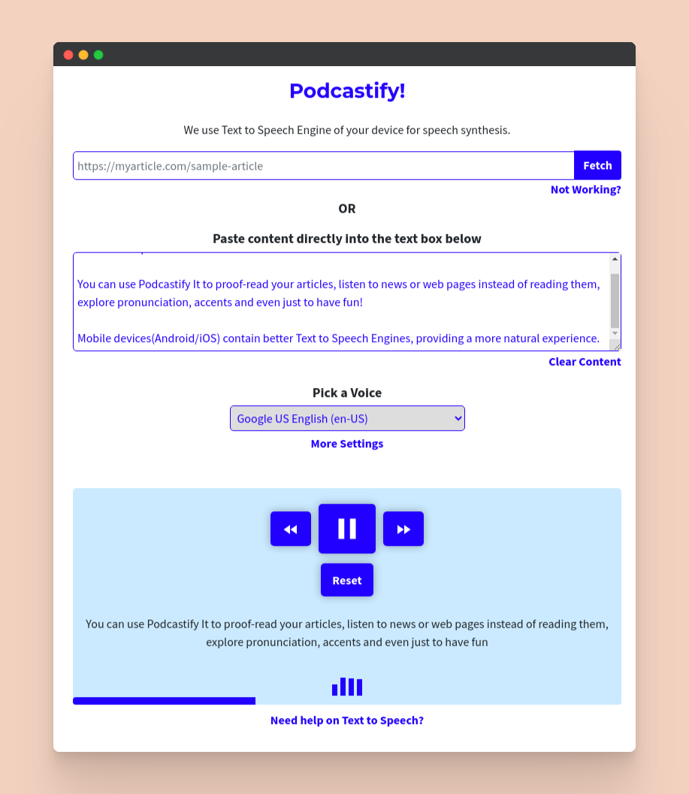

The objective was to create a WebApp which could:
Reduce screen time by reading out long content, bringing podcast experience to any content.
Simple to understand and easy to use.
Read text content given to it, with an intuitive experience.
Work across mobile and desktop browsers.
Make the experience memorable.
Push for integration with content based websites.
Being the developer myself, I kept making the skeleton of the app as I learnt the tech. Initially, the app could speak only a small amount of content at a time.
As I kept using it, I began to realise that it was necessary to process longer content and it had to be done by breaking the content into smaller chunks. So, the idea was to read sentence by sentence. It also would help the listener to keep a track of the content currently being read and check in quickly if something was not clear in the TTS voice.
It was quickly obvious that nobody can sit and listen to a complete article or a news page, without getting interrupted by the world. So, it was necessary to be able to Pause, Resume, Skip etc. Designing this just like a music player would make the user feel comfortable.
Next, I myself felt that copy pasting whole web pages into the text box was not that easy, especially on mobile devices. So, fetching the article from the URL of the content was the perfect requirement.
Since content fetched from URLs would be of various lengths, the user might not know how long is the content when he begins listening. Showing the progress would be giving a clear idea on the relative time elapsed or left, just like a music player track.
Owing to the technicality of the API used for Text to Speech, many users are bound to experience technical difficulties, the first time they use the WebApp. Running the app in low system volume, no TTS voices installed in their system or even something being currently played through devices speakers… Any of these could make the user feel confused whether the speech has really begun or not. Adding bars for visualization could really avoid the negative user experience.
So that’s how the ‘User needs’ surrendered themselves to me, with my continuous usage.
Text to speech being less known to most people, putting that on the landing page would definitely not help in conveying all the cool and great things that they can use the WebApp for! So I decided to carve out a relevant issue people face: Increased screen time. Showing them how it can solve their problem, hooks them up and pushes them to take a minute and explore the app.
Pictures and illustrations make the site more lively, so at least one had to be there. Picked up a stylus and drew one myself! Since most users do not know the variety of things this app can do, it was necessary to present them in quick small chunks, so that they could relate to at least one.
With tons of technical stuff going behind the scenes, the user could end up in a host of situations, needing directions. However, not every single problem needs to be shown to the user, with its solution. It messes up the layout!
So, the following were put in contextual modals, for help at appropriate places:
URL Fetch not working.
Rate and Pitch settings of TTS, which are used by very few.
Indication to configure device Text to Speech Engine.
The player interface had the following elements to be displayed:
Player controls
Text currently being read
Progress bar
Speaking visualisation
Visually, the progress bar was pushed to the bottom, fitting nicely as a border, at all progress levels. Explicitly mentioning “Reading below text” was not necessary with speaking visualisation taking care to give indication on speaking status. Reset button found its place at the chin, preserving player control symmetry.
Finally, the whole playing interface deserved to be raised as one unit with a block colour relative to the background.
Whole design was mobile focussed with least possible elements on the screen at a time. A consistent theme and accent colour, borders and rounded corners were maintained.
